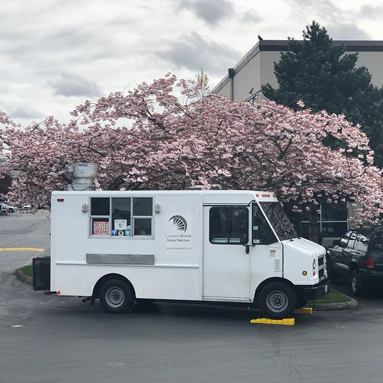

June 2006
By Derrick & Eleanor Ellis
"My love for lumpia was immediate, when I first tasted lumpia by the hands of my lovely wife back in 2003. I was hooked from the first bite!"
For the next couple of years, I personally witnessed how popular lumpia was as we brought them to pot-lucks and private parties. They were the first item to be completely devoured every single time. I knew we were on to something. So I mentioned to my wife why not start a business around lumpia! So we began from very humble beginnings. Every bit of our resources was used, repurposed, and used until it could not be used anymore. We put love and care in every dish we served.
We started by selling small quantities to friends. Then the orders began to grow. Word continued to spread and we were ready for the challenge to grow this business. That time came and we took full advantage of the audience that loved and craved lumpia. We began to tap into small businesses and corporations for corporate catering. Next, we starred in our first farmers market that led to more farmers markets in different cities. Caterings were coming in stronger from our growing audience. Every year since our start, we have experienced growth and we are so thankful. As of today we now have food trucks, store fronts, catering, events/festivals, and very cool new ventures coming for our #LumpiaWorldFanFamily. Stay Tuned!
We have the BEST #FanFamily ever! It is amazing to see and speak with our #FanFamily that have been apart of our growth since 2006 and early years in this business. We graciously say thank you to each and everyone of you from the bottom of our hearts.